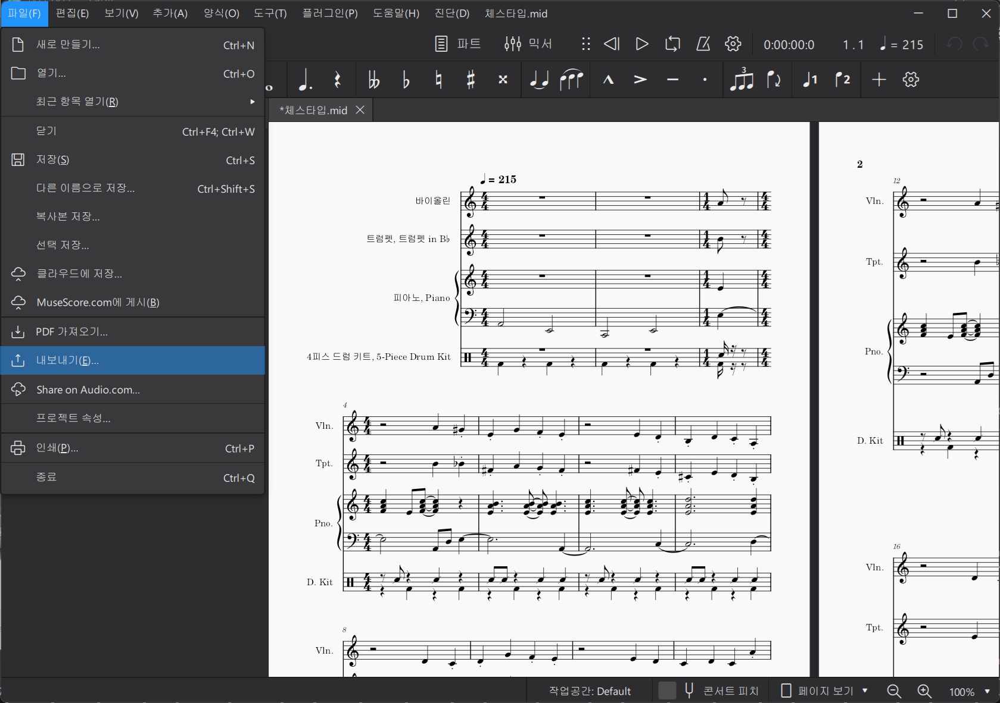

Lost Ark Drum MML Guide
로스트아크 드럼 MML 변환기를 사용하는 방법에 대해 안내합니다.
1) MuseScore로 드럼 트랙 MIDI 출력하기


- MuseScore에서 드럼 트랙의 MIDI 파일을 출력해줍니다.
- 3MLE에 MIDI파일을 입력해도 되지만, 그럴 경우 드럼 트랙을 구분하기 어렵기 때문에, MuseScore를 한번 거쳐줍시다.
2) 3MLE에 MIDI파일을 입력한다.


- 3MLE에 MIDI 파일을 입력해줍니다.
- 빨간색으로 표시된 부분을 같게 설정해주세요.
3) 클립보드로 MML을 출력한다.


- 클립보드로 MML을 출력해줍니다.
- 가급적이면 트랙 하나씩 출력하시는걸 추천드립니다.
4) 로스트시트에 입력한다.

- 로스트시트에 붙여넣기 하고 Convert 버튼 클릭.
- 결과물을 클립보드에 복사합니다.
5) 로스트아크에 입력한다.

- 로스트아크의 악보 편집 화면에서, 매크로 편집을 클릭하고, 붙여넣기